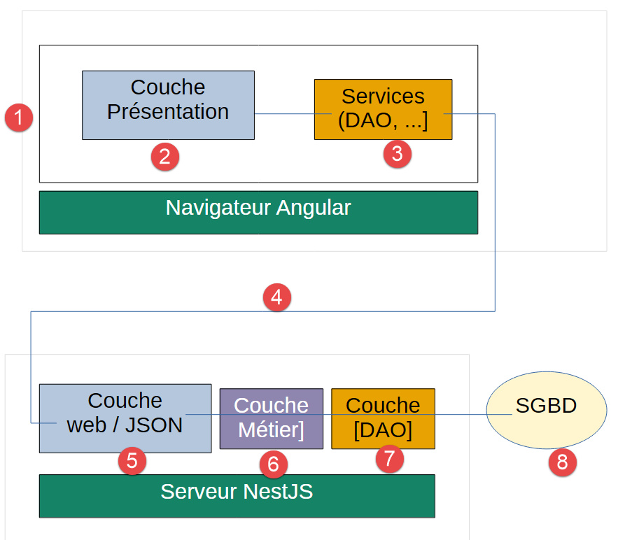
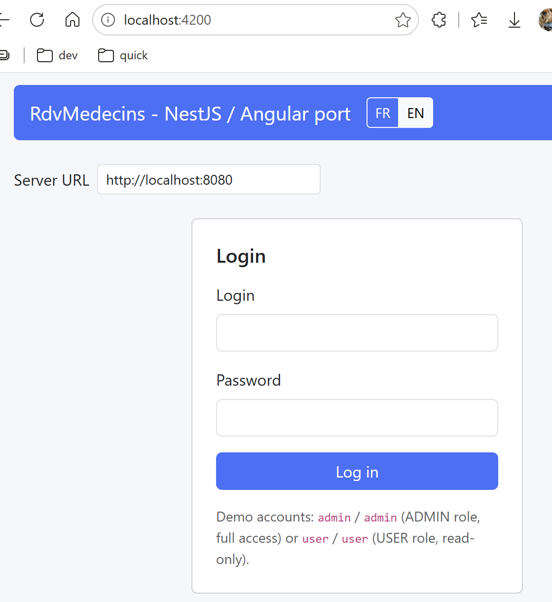

1. Introduction
Le PDF du document est |ICI|.
Les codes du document sont |ICI|.
Ce document est un produit de l’IA Claude d’Anthropic. Il a pour vocation de transposer le document : [Un exemple de client / serveur - AngularJS 1.x / Spring 4 ] de deux manières :
- le client AngularJS 1.x est remplacé par un client [Angular] 22 ;
- le framework web Java Spring MVC est remplacé par le framework web NestJS ;
L’IA Claude d’Anthropic a fait l’essentiel du travail (90%) :
- génération des codes : Claude a généré la totalité du code. Je n’ai fait que tester celui-ci en suivant le cours généré
- génération du cours au format ODT : Claude a généré plusieurs versions à ma demande. C’est là que je suis principalement intervenu.
Note : A la lecture du cours généré par l’IA Claude je me suis aperçu qu’il y avait beaucoup de notions à comprendre. Si le lecteur a pour premier but, “apprendre NestJS”, un exemple plus simple est disponible dans le document [Introduction au langage TypeScript et au framework web NestJS par l’exemple ]. Il pourra ensuite revenir sur ce document pour appréhender le framework client Angular.
Serge Tahé, septembre 2026
==
Ce document fait suite au cours “Un exemple de client / serveur - AngularJS 1.x / Spring 4”, écrit en 2014. Ce document original construisait une petite application de prise de rendez-vous médicaux (« [RdvMedecins] ») avec un serveur Spring 4 / Spring Data / Spring MVC et un client AngularJS 1.x.
Douze ans plus tard, les deux frameworks utilisés ont profondément évolué, ou ont même été remplacés dans les usages courants :
- côté serveur, [NestJS] s’est imposé comme l’un des frameworks Node.js/TypeScript les plus utilisés pour construire des API web structurées, avec une philosophie proche de celle de Spring (modules, contrôleurs, services, injection de dépendances) mais dans l’écosystème JavaScript/TypeScript ;
- côté client, AngularJS 1.x a été totalement réécrit à partir de 2016 sous le nom [Angular] (2, 4, 5… jusqu’à la version 22 utilisée dans ce document), avec une architecture par composants, puis, plus récemment, un système de réactivité par signaux qui remplace la surveillance ($watch) d’AngularJS 1.x.
L’objectif de ce document est de reprendre l’étude de cas originale - la même application, les mêmes fonctionnalités, la même base de données - et de la reconstruire avec les outils actuels, en conservant autant que possible la même progression pédagogique que le document de 2014.
1.1. Une reconstruction par étapes
Le document original faisait environ 300 pages et couvrait, en plus du coeur fonctionnel de l’application : l’authentification par rôles (Spring Security), et douze exemples progressifs pour découvrir AngularJS 1.x pas à pas. Reconstruire l’intégralité de ce contenu en une seule fois serait à la fois long et peu digeste.
Ce document couvre donc les deux premières étapes de la reconstruction :
- l’architecture générale de l’application (inchangée dans son principe) ;
- la base de données (inchangée, à l’ajout près de la table [users]) ;
- le serveur [NestJS] complet, avec toutes les fonctionnalités de consultation et de réservation/annulation de rendez-vous ;
- l’authentification par jetons JWT et le contrôle d’accès par rôles (ADMIN/USER), équivalente à la couche Spring Security du document original ;
- le client [Angular] correspondant, avec les mêmes fonctionnalités, un écran de connexion, une interface Bootstrap adaptée au rôle de l’utilisateur connecté, et le passage français/anglais de l’interface ([@ngx-translate/core]).
Deux fonctionnalités du document original restent, à ce stade, hors de ce document : le mode « debug » du client original (affichage du modèle brut de la vue courante), délibérément laissé de côté dans ce portage (cf. chapitre 6 pour la justification de ce choix), et le réglage d’un délai réseau artificiel, lui reporté à une étape ultérieure.
1.2. À qui s’adresse ce document
Ce document ne suppose aucune connaissance préalable ni de [NestJS], ni d’Angular. Chaque notion nouvelle (décorateur, injection de dépendances, composant, signal…) est expliquée au moment où elle apparaît, avec un maximum de détails - y compris pour les lecteurs qui n’ont jamais écrit une ligne de TypeScript.
Quelques bases sont malgré tout utiles pour aborder ce document dans de bonnes conditions :
- une connaissance de base du langage JavaScript (variables, fonctions, tableaux, objets) ;
- une connaissance de base des échanges HTTP dans une application web (méthodes GET/POST, format JSON) ;
- les balises courantes du langage HTML ;
- l’utilisation d’une ligne de commande (cd, npm install…).
Le langage TypeScript (utilisé aussi bien côté serveur que côté client) n’a pas besoin d’être déjà connu : c’est un sur-ensemble de JavaScript qui ajoute un système de types, expliqué au fil du document chaque fois qu’il intervient. Le lecteur intéressé pourra lire le document [Introduction au langage TypeScript et au framework NestJS (2026)] qui explique en détail TypeScript.
1.3. L’architecture de l’application
L’architecture générale de l’application n’a pas changé depuis le document original :
- un serveur web délivre au navigateur une page HTML/CSS/JS unique, contenant une application [Angular] construite sur le modèle Composant (vue + logique associée), qui s’appuie sur des services pour dialoguer avec le serveur ;
- l’utilisateur interagit avec les vues présentées dans le navigateur. Ses actions nécessitent parfois l’interrogation du serveur [NestJS], qui traite la demande et rend une réponse JSON (JavaScript Object Notation) ; celle-ci est utilisée pour mettre à jour la vue présentée à l’utilisateur.
L'application étudiée aura l'architecture suivante :

- en [1], l’utilisateur de l’application [Angular] interroge la couche [présentation] [2] de celle-ci ;
- pour exécuter l’action demandée par l’utilisateur, la couche [présentation] [2] peut interroger la couche [Services] [3] ;
- pour rendre le service demandé, la couche [3] peut avoir besoin d’interroger [4] le serveur JSON distant implémenté par [NestJS] ;
- selon la requête reçue en [5], les couches [6-8] peuvent être interrogées ;
- la réponse du serveur remonte les couches [2-8] à l’envers ;
- la vue affichée à l’utilisateur [1] reflète cette réponse ;
Note : si vous êtes perdu dans l’architecture du projet, revenez à ce schéma. Notez bien que le SGBD est exploité par le serveur et non par le client.
1.4. Les outils utilisés
Ce document utilise les outils suivants (leur installation est détaillée au chapitre 2) :
- Node.js (version 22 ou plus récente) et son gestionnaire de paquets npm - l’équivalent, dans l’écosystème JavaScript, de ce que Java + Maven étaient pour le serveur Spring original ;
- Visual Studio Code, un éditeur de code gratuit, avec ses extensions TypeScript - l’équivalent de Spring Tool Suite (STS) et Webstorm utilisés par le document original ;
- [NestJS] CLI ([@nestjs/cli]) et [Angular] CLI ([@angular/cli]), deux outils en ligne de commande qui génèrent la structure des projets et lancent les serveurs de développement ;
- [MySQL] 8 pour la base de données (le document original utilisait [MySQL] 5 - le schéma relationnel, lui, ne change pas) ;
- Postman (ou tout autre client HTTP), pour tester les URL du serveur qui répondent à des requêtes POST (/ajouterRv, /supprimerRv) - un navigateur ne pouvant tester que des requêtes GET.
1.5. Les fonctionnalités de l’application
Les fonctionnalités « métier » de l’application [RdvMedecins] sont inchangées par rapport au document original ; le contrôle d’accès, en revanche, est légèrement plus riche que l’original (cf. le tableau ci-dessous) :
- un cabinet médical emploie plusieurs médecins, chacun avec ses propres créneaux horaires de consultation ;
- un utilisateur doit se connecter (login/mot de passe) pour accéder à l’application ;
- une fois connecté, il peut choisir un médecin et un jour, et consulter son agenda pour ce jour : chaque créneau horaire y apparaît libre, ou occupé par un rendez-vous ;
- un utilisateur du rôle ADMIN peut, en plus, réserver un créneau libre pour un patient de son choix, et annuler un rendez-vous déjà pris ;
- un utilisateur du rôle USER consulte les agendas mais ne peut ni réserver ni annuler (accès en lecture seule) - une différence assumée avec le document original, où le rôle USER ne servait qu’à illustrer un refus d’accès et ne pouvait rien consulter du tout (cf. chapitre 3, section « Authentification », pour la justification de ce choix).

1.6. Ce qui change, ce qui ne change pas
Document original (2014) | Ce document (2026) | |
[MySQL] 5, tables MEDECINS/CLIENTS/CRENEAUX/RV | [MySQL] 8, mêmes tables, mêmes colonnes, mêmes contraintes | |
Java, Spring 4, Spring Data (JPA/Hibernate), Spring MVC | TypeScript, [NestJS], [TypeORM], mêmes URL exposées | |
JavaScript, AngularJS 1.x, bower | TypeScript, [Angular] 22 (composants standalone, signaux), npm | |
Bootstrap 3 | Bootstrap 5 | |
Spring Security, HTTP Basic, rôles en 3 tables, seul ADMIN utilise l’application | Passport/JWT ([@nestjs/passport], [@nestjs/jwt]), un jeton signé présenté à chaque requête, rôle en une seule colonne, ADMIN accès complet et USER lecture seule | |
bibliothèque angular-translate | [@ngx-translate/core] + [@ngx-translate/http-loader] |
1.7. Organisation de ce document
- Mise en place de l’environnement de travail - installer les outils, créer la base de données, lancer le serveur et le client pour la première fois.
- Introduction à [NestJS] - les bases du framework (modules, contrôleurs, providers), avec un mini-projet de découverte.
- Le serveur [NestJS] de l’application [RdvMedecins] - la base de données, les entités [TypeORM], la couche DAO, la couche métier, la couche web, et l’authentification par jetons JWT et rôles.
- Introduction à [Angular] - les bases du framework actuel (composants, signaux, services, communication HTTP).
- Le client [Angular] de l’application [RdvMedecins] - l’architecture du client, chacun de ses composants (dont l’écran de connexion), l’interface Bootstrap, le passage français/anglais de l’interface, et une utilisation pas à pas de l’application complète.
- Conclusion et étapes suivantes.